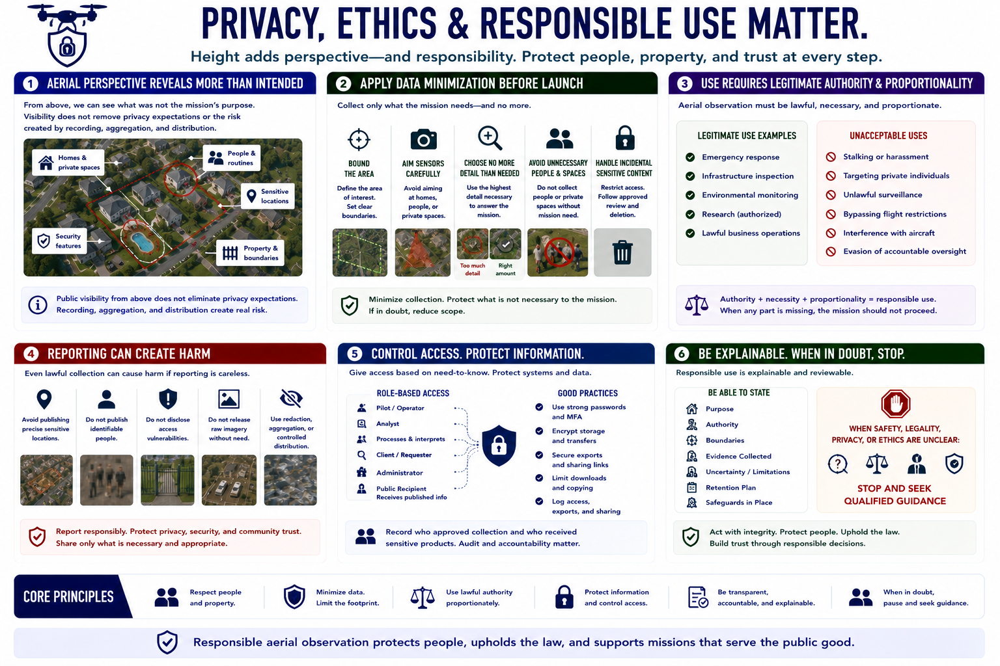

Privacy, Ethics, and Responsible Use
Connecting to LMS... Progress: in progress

Narration
Aerial perspective can reveal people, homes, routines, property, sensitive locations, and security features that were not the mission's purpose. Public visibility from above does not remove privacy expectations or the risk created by recording, aggregation, and distribution.
Apply data minimization before launch. Bound the area, aim sensors carefully, choose no more detail than needed, and avoid unnecessary people or private spaces. If sensitive content is captured incidentally, restrict access and follow approved review and deletion procedures.
Use requires legitimate authority and proportionality. Do not use aerial observation for stalking, harassment, targeting private individuals, unlawful surveillance, flight-restriction bypass, interference with aircraft, or evasion of accountable oversight.
Reporting can create harm even when collection was lawful. Avoid publishing precise sensitive locations, identifiable people, access vulnerabilities, or raw imagery without a defined need. Use redaction, aggregation, or controlled distribution when appropriate.
Access control should separate pilots, analysts, clients, administrators, and public recipients according to need. Protect accounts, storage, exports, and sharing links. Record who approved collection and who received sensitive products.
Responsible use is explainable. The operator should be able to state the purpose, authority, boundaries, evidence, uncertainty, retention, and safeguards. When safety, legality, privacy, or ethics are unclear, stop and seek qualified guidance.